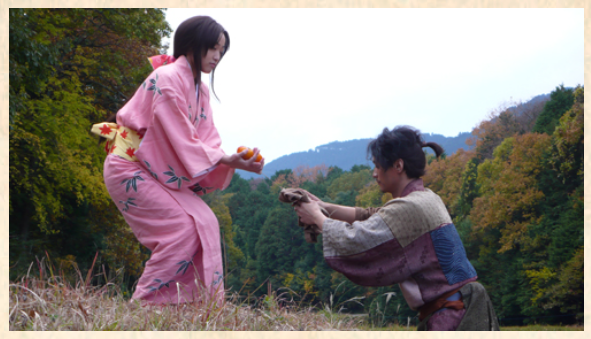

BATDOWN SOCCER is about scoring as much points as possible by kicking the ball and hit the creature, which spawn at random location and fly randomly. The way I made the creature's behavior random by setting its spawn location randomly. Once it spawn, it will glide to a location on screen randomly but not anywhere pass the top part of the ball. And once it has reach its gliding location, it will glide to another random location until it is hit by the ball. Another important coding feature of the creature is after the creature is hit by the ball. After the ball hit the creature, it will get delete and another will appear. This was done by first hiding the original creature and then create a clone. On the clone are the scripts of what will happen when it gets hit by the ball and what it does when it spawn. As for the ball, the ball is the one with the scripts for the players to act on. They can "kick" the ball by pressing certain keys, and if the ball tounches the creature, then it is scripted to increase the score. Throughout this project, I had the opportuinity to put my own taste of gaming to the test. I had three goal in mind for the game. Make it challenging, visually appealing, and worth playing more than once. To make it challenging, I made three different creatures, each had its own unique differences. The black bat has quickness, the dragon is slow but decisive, and the bat is somewhere in the middle. What makes it challenging is the way the creatures give point and time to the player to take action. The bat and dragon gives one point and take away one, but the black bat gives one but take away five, and the game is over if your score is under 0. The dragon gives the player less time to aim by having few glides but it glide slowly. The black bat glide fast but give player more time to focus and take aim by having more glides. The bat is somewhere in between. With some research of the human reaction, I made the game a test for those who want their reaction time tested. As for the visual appeals, I created a simple animation for the bat, black bat, dragon, and ball. Seperately, I created different customs for the them and have them switching constantly throughout the game. To make the game worth playing more than once, I made the game fairly hard. When player play the game but loses and left uncomplished, they would want to try again and keep going to see whether or not they can get to the end. With the scoring system, players can replay to not only to complete but also to get the highest score. The hardest step for me has to be coding the transition between the creatures, it was hard thinking of a way to make a smooth transition so that the game wouldn't have any "glitches." I had to recode and test over and over again until I thought of creating clones of the creature. In the end, I met my goal and created a challenging, visually appealing, and worth of replay game. After having my classmate play it, I found out that my game was too hard and lack a good tutorial. Something I need to adjust in the future.
This story is about a peasant, named Himura Battousai, living through a time of war. How will his life go depend on the players decision throughout the story. Every decisions will heavily decide Himura's life path.
The main concept for creating this game, using python, was conditioning and while loops. Conditioning was applies as a way for the player to progess through the story. If the player choses to do this, then he or she will go down that path of the story. The while loops is used to make the game smooth. If a player miss type the command, he or she is notifying of a invalid input and can try again and again until the right input is typed. Not a problem had arise while working on this interactive fiction for me, things were smooth, fun, and comfortable throughout the process. Looking at my work, I like the story but I feel as if I can improve the experience with better English. To me, the vivid and weak describtion of event lack emotional appeals, which is what keeps the player playing. But the good story makes up for the flaws, it is intersting and enjoyable to play through. When I went through my classmate, I did like one story more than mine because I was able to relate the events in the story. If I had the chance to try again, I would improve on my story emotional appeals and add much more events that my audience can relate to.